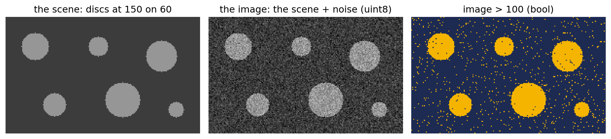
Biomedical Engineering Skills 3
Week 5: which pixels are objects?
Massimo Vassalli
massimo.vassalli@glasgow.ac.uk
Where we are
DEFINE → DECOMPOSE → SPECIFY ⇄ DIAGNOSE → VALIDATE
Week 4: the image itself, and how to prepare it. The next three weeks:
| Week | Question |
|---|---|
| 5 | which pixels are objects? and how many objects are there? |
| 6 | shaping the masks: holes, touching objects, objects of different kinds |
| 7 | finding objects without a mask; transforms that make a problem easy |
By the end of today you should be able to:
- turn a threshold into a step that calculates it from the data, and know the standard methods as candidates, each with an assumption
- judge a threshold by the stability of the answer, knowing that what is stable depends on what you measure
- choose which number each pixel carries (a channel, a colour space, a property you build), with numbers measured on regions picked by hand
- label a mask and measure its objects: count, area, a minimum size with a reason
- check a count object by object against a count by hand
Today: slides and a notebook
- the slides: segmentation by threshold, on a digital image and on a fluorescence image (
triangles.tif) - the notebook
ENG3090_lec05_inclass.ipynb: one problem, from DEFINE to VALIDATE, on a photo (popcorn.jpg)
How many objects (popcorn kernels and almonds) are on the mat?
The orange mark means: switch to the notebook. ▶ notebook, part N
The assistant sees the whole notebook: a prompt can use what the cells above defined, so prompts stay short. One thing per prompt; the cells that use it are yours; and name whatever a prompt depends on, or whatever depends on it.
Segmentation
A mask: one decision per pixel
bool (120, 200)
4007 pixels True, 16.7 % of the imageThe answer is a mask: an array of True / False, the same shape as the image. Masks are shown in two colours that are not grey levels (here navy and amber): a mask has no “brighter” or “darker”, only yes or no.
Working with masks
| You want | Write | Note |
|---|---|---|
| object pixels | image > T |
> or >=: a decision, as in week 2 |
| background | ~mask |
not -mask, not 1 - mask |
| both, either | mask_a & mask_b, mask_a | mask_b |
brackets: (a > 1) & (b < 5) |
| the values inside | image[mask] |
a 1D array |
| area, fraction | mask.sum(), mask.mean() |
True counts as 1: the sum is the area in pixels, not µm² |
Segmentation, formally
An image is a function on a grid of pixels: \(I : \Omega \to \mathbb{R}\), with \(\Omega \subset \mathbb{Z}^2\) (for a colour image, \(\mathbb{R}^3\)).
Segmentation is a partition of \(\Omega\) into regions \(\Omega_1, \dots, \Omega_n\) that are non-empty, disjoint and together cover the image:
\[ \bigcup_{i=1}^{n} \Omega_i = \Omega, \qquad \Omega_i \cap \Omega_j = \emptyset \;\; (i \neq j), \qquad \Omega_i \neq \emptyset \]
with each region homogeneous by some criterion \(P\) (a property of its pixels), and neighbouring regions not: \(P(\Omega_i)\) true, \(P(\Omega_i \cup \Omega_j)\) false.
By threshold, the simplest case: two regions, defined by one rule on the value of each pixel,
\[ \Omega_{\text{obj}} = \{\, x \in \Omega : I(x) > T \,\}, \qquad \Omega_{\text{bg}} = \Omega \setminus \Omega_{\text{obj}} \]
and the mask is its indicator function, \(M(x) = 1\) if \(x \in \Omega_{\text{obj}}\), \(0\) otherwise. The objects are a second partition, of \(\Omega_{\text{obj}}\) into its connected components (later today).
Where should the threshold go?
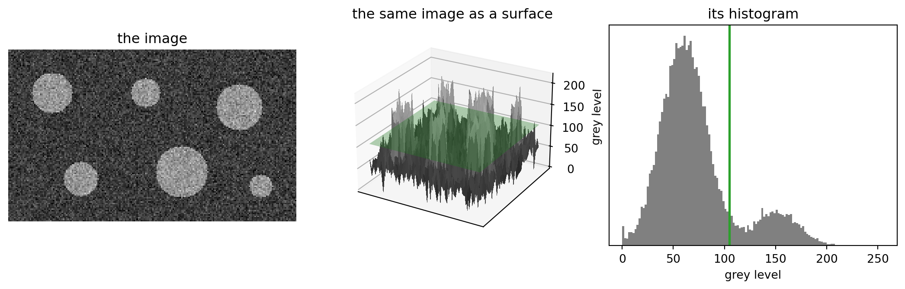
The image as a landscape: the discs are plateaux, the noise is rough ground. A threshold is a horizontal plane (green) at height T: everything above it is object. In the histogram, the same plane is a vertical line: background pixels to its left, object pixels to its right.
Where should the threshold go: three choices
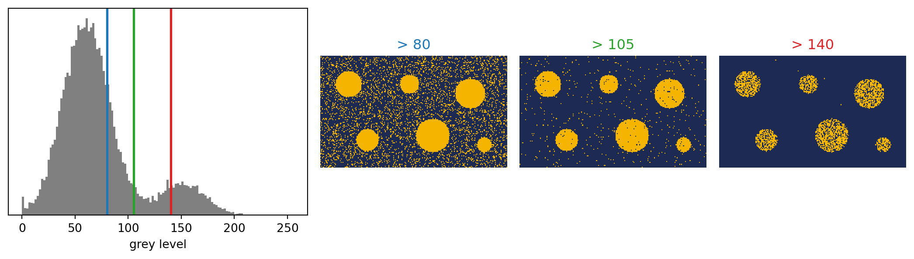
Two peaks, background and objects. Too low: noise becomes object. Too high: objects lose their edges, and dim objects disappear. Somewhere in the valley: but where, exactly, and why?
A threshold calculated from the data
Week 3: a value chosen by eye is not a method. The threshold becomes a step with a rule, which can be diagnosed with digital data.
Otsu’s rule. A threshold \(T\) splits the pixels into two groups, \(C_0\) (values \(\le T\)) and \(C_1\) (values \(> T\)), with fractions \(\omega_0, \omega_1\) of the pixels, means \(\mu_0, \mu_1\) and variances \(\sigma_0^2, \sigma_1^2\). The total variance of the image splits in two parts:
\[ \sigma^2 \;=\; \underbrace{\omega_0\,\sigma_0^2 + \omega_1\,\sigma_1^2}_{\sigma_W^2(T):\ \text{inside the groups}} \;+\; \underbrace{\omega_0\,\omega_1\,(\mu_1 - \mu_0)^2}_{\sigma_B^2(T):\ \text{between the groups}} \]
\(\sigma^2\) does not depend on \(T\): making the groups as tight as possible (smallest \(\sigma_W^2\)) is the same as pushing them as far apart as possible (largest \(\sigma_B^2\)). Otsu chooses
\[ T^* = \arg\max_T \; \omega_0(T)\,\omega_1(T)\,\big(\mu_1(T) - \mu_0(T)\big)^2 \]
The product \(\omega_0\,\omega_1\) favours groups of comparable size: remember it.
Otsu, on the digital image
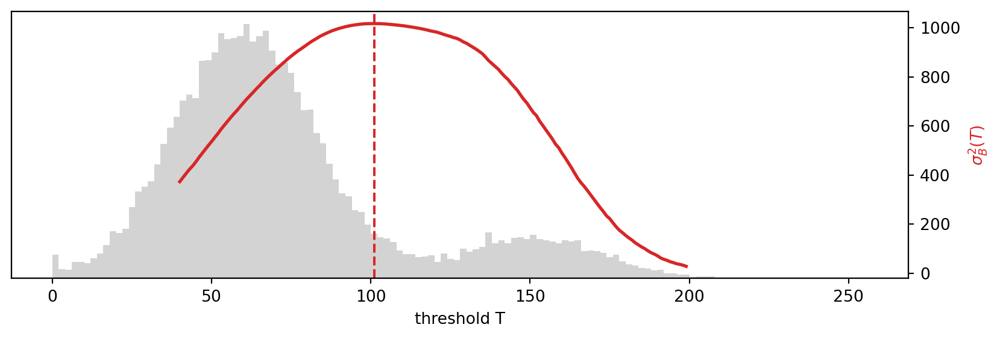
The red curve is \(\sigma_B^2(T)\), computed for every T; its maximum is Otsu’s threshold. filters.threshold_otsu(image) returns 101: a number, not a mask.
The family of threshold methods
| Method | filters. |
How T is calculated | Works well when | Fails when |
|---|---|---|---|---|
| Otsu | threshold_otsu |
maximises the between-group variance | two groups of comparable size and spread | one group is tiny, or much wider than the other |
| Isodata | threshold_isodata |
repeats T = (μ₀ + μ₁) / 2 until T stops changing | as Otsu (often the same T) | as Otsu |
| Li | threshold_li |
minimises the cross-entropy between the image and its two-level version | groups of different spread, low contrast | very small objects |
| Yen | threshold_yen |
maximises an entropy-based measure of how well each group is described | a smaller bright group | noisy, flat histograms |
| Triangle | threshold_triangle |
a line from the histogram’s peak to its far end; T where the histogram is farthest below it | one large background peak and a long tail (fluorescence) | objects cover a large part of the image |
| Minimum | threshold_minimum |
smooths the histogram until only two peaks are left; T at the valley between them | a clear valley | no valley (raises an error) |
| Mean | threshold_mean |
the mean grey level | a quick baseline | skewed histograms |
| Multi-Otsu | threshold_multiotsu |
Otsu’s criterion for k groups: k − 1 thresholds | k groups, in order of brightness | groups that overlap |
| Local | threshold_local |
a different T for every pixel, from a window around it (e.g. its weighted mean) | an uneven background (week 4) | the window is wrong for the objects |
filters.try_all_threshold(image) shows seven of them side by side. They are candidates: which one becomes the step is decided by your criterion, on your data.
A real image
triangles.tif
A fluorescence image of a microfabricated array of triangles.
(4675, 4278) uint8
PALETTE
(3, 256)
IrfanView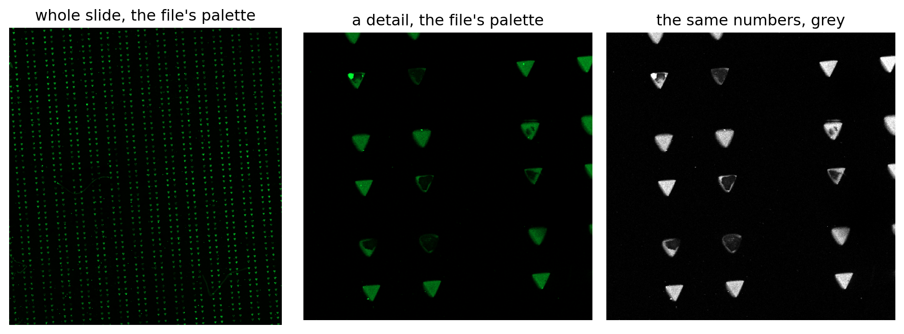
One channel, not three: the green is a palette (a lookup table of 256 colours) stored in the file. The numbers are what count; the colour is a display choice, as cmap was in week 4. No pixel size: everything in pixels.
A crop, and its histogram
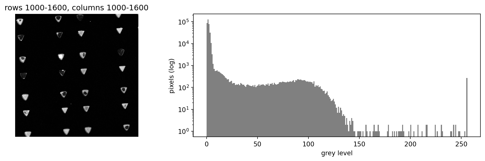
A huge, narrow peak (the dark background), a low hump (the triangles), and a spike at 255: saturated pixels. Many triangles are hollow: a bright rim around a dim centre. Counted by hand on the crop: 28 triangles.
Seven methods, seven thresholds
| Otsu | Isodata | Li | Yen | Triangle | Minimum | Mean | |
|---|---|---|---|---|---|---|---|
| T | 44 | 44 | 18 | 17 | 6 | 51 | 5 |
| foreground (%) | 3.4 | 3.4 | 4.5 | 4.5 | 6.1 | 3.1 | 7.3 |
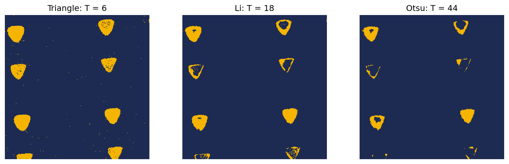
From 5 to 51: the methods disagree by a factor of ten. Which one is right?
Counting objects
Connected pixels
measure.label(mask) gives every group of connected True pixels its own number: 1, 2, 3… (0 is the background).
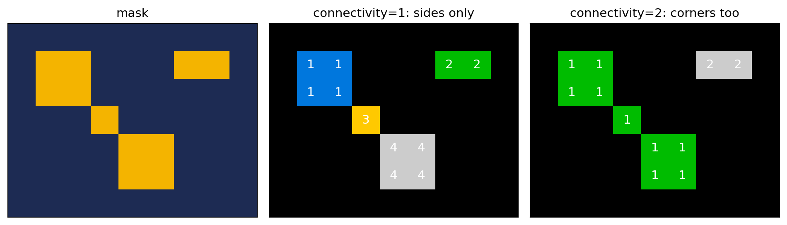
Do pixels touching only at a corner belong to one object? A decision (connectivity), and libraries disagree on the default: skimage.measure.label uses corners too, scipy.ndimage.label sides only.
The first count
measure.label turns the mask into connected components: each one is a candidate object, with its own number.
167 components
127 of them 5 pixels or fewer
[765 774 792 805 828] the largest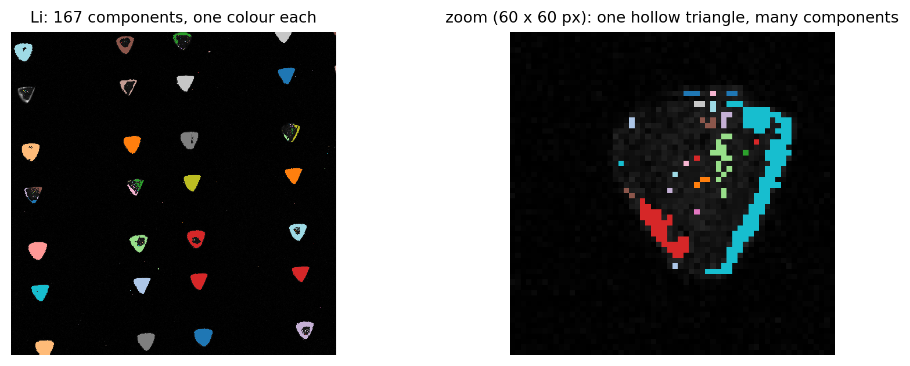
Most components are specks of a few pixels. Where are they? 112 of the 138 components under 50 pixels sit on a triangle: the dim centre of a hollow triangle is close to T, so noise pushes some of its pixels above it, in isolated specks, and a broken rim falls into pieces. The other 26 are in the background. They are all part of the mask, but they are not triangles: something must decide which components are objects.
Area: the first measurement
The area of a component is the number of its pixels: for component k, (labels == k).sum(), the same sum as for a whole mask.
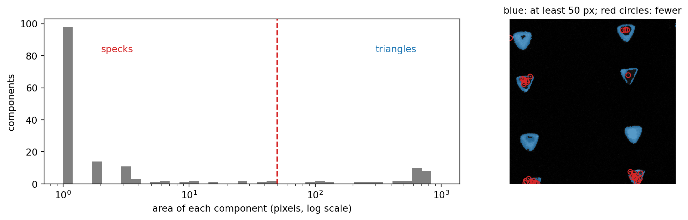
The areas form two populations: specks, from 1 to about 10 pixels, and triangles, in the hundreds (whole triangles 600–830 px; less where a hollow one breaks). The gap between them gives a rule for DEFINE: an object has at least 50 pixels. With it, 29 components are kept. Area is the first property we measure on each object, and here it is used to decide what an object is: too small is a speck. Next week, too large will mean merged objects.
Count against the threshold
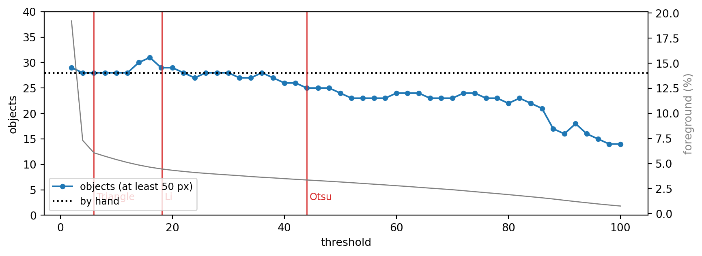
The count sits near 28 from very low thresholds to the mid thirties, then falls; the foreground area falls all the time. What is stable depends on what you measure.
A flat count tells us that the answer does not depend much on T. It does not tell us that the answer is right: for that, the objects themselves must be compared with the count by hand.
Right count, wrong objects
One point per triangle, picked by hand. Each point should have exactly one object near it: found; none: missed; more than one: split.
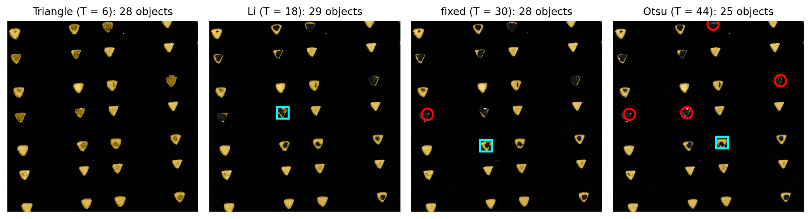
| Threshold | T | count | found | missed (red ○) | split (cyan □) | extra |
|---|---|---|---|---|---|---|
| Triangle | 6 | 28 | 28 | 0 | 0 | 0 |
| Li | 18 | 29 | 27 | 0 | 1 | 0 |
| fixed | 30 | 28 | 26 | 1 | 1 | 0 |
| Otsu | 44 | 25 | 23 | 4 | 1 | 0 |
At T = 30 the count is exactly 28, and still wrong: a missed triangle and a split one cancel out. A count can be right for the wrong reasons: check objects, not only the number (like accuracy in week 3).
Why does Otsu fail here?
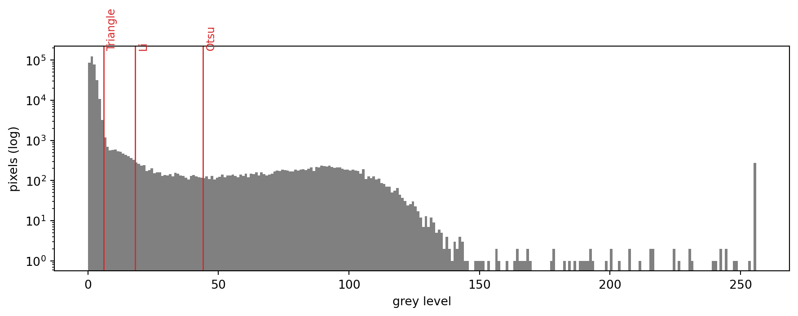
Otsu’s \(\omega_0\,\omega_1\) favours groups of comparable size; here the background is about 95% of the pixels, and the triangles are a broad, faint group. Its threshold lands inside the triangles: the dim ones vanish, the hollow ones break into pieces. Triangle was built for one big peak and a long tail, which is what fluorescence looks like. Different data, different winner: the criterion chooses.
▶ notebook, part 1: Look
Colour
Which number for each pixel?
A threshold needs one number per pixel; a colour photo has three.
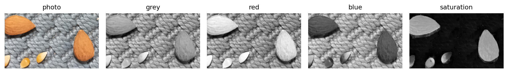
| Candidate | How | Means |
|---|---|---|
| grey | color.rgb2gray(photo) |
0.21 R + 0.72 G + 0.07 B: how bright it looks to us |
| one channel | photo[:, :, 0] |
red only (or green, or blue) |
| saturation | color.rgb2hsv(photo)[:, :, 1] |
how far from grey: 0 for any grey, light or dark |
| Lab | color.rgb2lab(photo) |
lightness, and two colour axes (green–red, blue–yellow) |
| your own | photo.std(axis=2), a ratio, a distance from a colour |
whatever separates your objects |
Almonds and kernels, side by side: in grey the almonds almost vanish into the mat. The choice is a step, with a rule, decided with numbers: the notebook does it.
▶ notebook, part 2: Explore
Objects on both sides
Black beans and pine nuts on a wooden board: the beans darker than the board, the pine nuts brighter. One threshold cannot find both; two can:
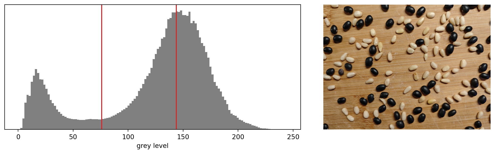
Two thresholds, 76 and 144: a dark group (the beans) and a bright one, with the board in the middle. Is the bright group the pine nuts?
Where the second threshold breaks
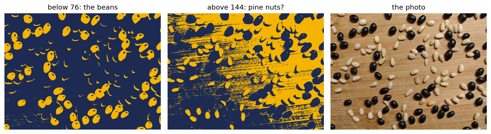
The low threshold finds the beans, and the shadows of the pine nuts (dark crescents beside them). The high one finds the pine nuts and the right half of the board: the light falls brighter on the right (week 4), and there the wood is as bright as the nuts. The classes overlap in grey, and more classes means more ways to be wrong. Next week: one class at a time, inside a mask.
Be inventive
When no threshold works, change the number, not the threshold. The board is reddish; beans and pine nuts are close to neutral. On the green–red axis of Lab (a), both kinds of object fall on the same side:
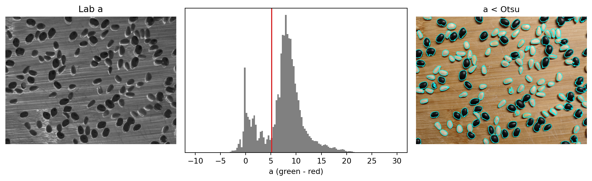
One threshold (Otsu, 5.2), both kinds of object, 121 objects; between thresholds 2 and 6 the count moves only from 124 to 127. Other ways to the same idea: saturation (popcorn: grey mat, coloured objects), the distance from the background colour, a ratio of channels, the levelled image of week 4. Then the standard tool works. The method is the easy part; finding the number where the question becomes easy is the work.
Measuring objects
label, then regionprops
label [1 2 3 4 5 6]
area [ 613. 317. 797. 1009. 441. 197.]
centroid-0 [30. 30. 40. 85. 90. 95.]
centroid-1 [ 30. 95. 160. 120. 50. 175.]
eccentricity [0. 0. 0. 0. 0. 0.]
intensity_mean [150.2 150.1 150.4 149.5 149. 152. ]Each object: area (pixels), centroid (row, column), bounding box, perimeter, eccentricity (0 for a circle, towards 1 for a line), orientation, mean intensity, and many more. Built by construction: discs of radius 14, 10, 16, 18, 12 and 8 (in label order), areas π r² = 616, 314, 804, 1018, 452, 201: a digital disc is never exactly a circle.
What scikit-image won’t tell you
from skimage import morphology
pair = np.zeros((5, 5), dtype=bool)
pair[1, 1] = pair[2, 2] = True # touching at a corner
print(measure.label(pair).max(), "object for label")
print(morphology.remove_small_objects(
pair, max_size=1).sum(), "pixels left")
print(morphology.remove_small_objects(
pair, max_size=1, connectivity=2).sum(), "pixels left")1 object for label
0 pixels left
2 pixels leftlabeljoins corners by default,remove_small_objectsdoes not: the same two pixels are one object of 2 pixels for one function, and two objects of 1 pixel for the other.- scikit-image 0.26 renamed
min_size(keep objects of at least this size) tomax_size(remove objects of at most this size). The old name still runs, with a warning, and an object exactly at the limit is now removed: we checked. Code from an assistant trained on older examples will usemin_size. Read the warnings. - A
threshold_*function returns a number;>or>=is your decision. Every size and area is in pixels.
▶ notebook, part 3: First attempt
Beyond thresholds
A threshold looks at one pixel at a time. Other methods look at more:
| Family | Idea | In scikit-image | When |
|---|---|---|---|
| edges | objects end where the value changes fast | filters.sobel, feature.canny |
objects with clear borders, uneven inside |
| region growing, watershed | grow objects from seeds until they meet | segmentation.watershed |
touching objects (week 6) |
| clustering | group pixels with similar colours | sklearn.cluster.KMeans |
several colours, no clear order |
| learned models | a network trained on examples | cellpose, StarDist, ilastik | cells, nuclei: hard shapes (week 7) |
Every one of them is still a step with a rule, parameters, and a mask at the end: judged in the same way, against a reference.
▶ notebook, part 4: VALIDATE
What a mask does not tell you
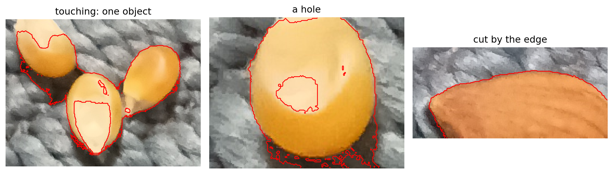
- touching objects are one object; their shadow joins them
- holes: a shiny highlight is not “object”; the area is wrong even when the count is right
- objects cut by the edge: count them or not? A DEFINE decision
- the edge of an object moves with T: an area needs a rule for where an object ends
Week 6: operations on the shape of a mask.
Tutorial
Count the triangles, on two crops of triangles.tif.
- DEFINE: what is an object; the count by hand, one point per triangle, on crop A
- DECOMPOSE: threshold; objects with a minimum area; check against the points
- SPECIFY ⇄ DIAGNOSE: digital triangles, solid and hollow, with known counts
- VALIDATE: the method and the minimum area chosen on crop A, reported on crop B (count it by hand too)
Bring: lec05_src/data/triangles.tif.
Assignment 4
Pasta and almonds. Count the objects in a photo of pasta and almonds on a pale sheet.
- choose the number each pixel carries, with evidence measured on regions picked by hand
- segment it with a standard threshold method, calculated from the data
- show how stable the count is, and compare it, object by object, with your count by hand
Instructions, data and deadline on Moodle.
Take-home message
- Segmentation is one decision per pixel; the answer is a mask (bool)
- A threshold is calculated by a rule; the methods are candidates, each with an assumption
- Stable is not correct: check objects, not only the count
- Choose the number each pixel carries before choosing the threshold: be inventive
- Area is the first measurement, and it decides what an object is
- Libraries disagree on defaults (connectivity, sizes): print, check, read the warnings

ENG3090 Biomedical Engineering Skills 3